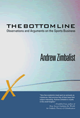

Feisty essays from one of the nation's top sports economists
Feisty essays from one of the nation's top sports economists


 Feisty essays from one of the nation's top sports economists
Feisty essays from one of the nation's top sports economists

|  |
The Bottom LineObservations and Arguments on the Sports BusinessAndrew Zimbalistpaper EAN: 978-1-59213-513-4 (ISBN: 1-59213-513-7) |
"Very few academics treat sport as seriously as it deserves. And precious few of them keep their subject interesting. Andrew Zimbalist is royalty in this small kingdom."
—Franklin Foer, author of How Soccer Explains the World: An Unlikely Theory of Globalization
In The Bottom Line, one of the foremost sports economists writing today, Andrew Zimbalist (National Pastime), analyzes the "net value" of sports. He examines motives for why owners buy franchises, the worth of the players and the profitability of teams, and the importance of publicly funded stadiums. In the essays collected here—which appeared in publications like The New York Times, Sports Business Journal, and The Wall Street Journal from 1998-2006—Zimbalist considers the current state of organized sports, from football and baseball to basketball, hockey, and soccer. He also addresses antitrust and labor relations issues, gender equity concerns, collegiate athletics, and the regulation of steroid use, providing readers with a better understanding of the business of sports and the sports business—and what makes both tick.
Excerpt available at www.temple.edu/tempress
"Andrew Zimbalist has taken important topics and given us a thoughtful, fascinating, and deeply prepared discussion of the games we hold so dear."
—Lesley Visser, CBS Sportscaster
"Andrew Zimbalist is one of the best writers among economists working today, and he provides insightful analysis on interesting subjects. The essays in The Bottom Line provide a narrative history of recent events in the sports business and contain a wealth of detailed information, such as the share price for the Indian's IPO. I recommend this unique book."
—Brad Humphreys, Associate Professor, University of Illinois at Urbana-Champaign
"The Bottom Line is not only eminently readable but it has much to teach the average (whatever such a designation might mean) sports fan a great deal about the economics of sport. It contains information that is valuable and just beyond the access of the average fan."
—Grant Farred, author of Phantom Calls: Race and the Globalization of the NBA and Long Distance Love: A Passion for Football
"The advantage of this book is that it allows the reader to see how one of the foremost professors in sports and business analyzed each event virtually as it happened. So this book will take you back over the past decade and consistently teach you something new about professional and college sports."
—Dave Berri, The Wages of Wins Journal
"The bottom line on The Bottom Line? Definitely worth the money and time, even though it reprints work previously published. The author of several excellent books on baseball economics, Zimbalist (economics, Smith College) is an indefatigable, seemingly ubiquitous commentator on the business of sports in the print and broadcast media....Readers will be informed by most of these opinion pieces and infuriated by others. But Zimbalist should not be ignored. Highly recommended."
—Choice
"The Bottom Line brings together some of the best articles that [Zimbalist] has written during the past 15 years. Like readers who find that their favorite novelist is also an expert short-story writer, those familiar with Zimbalist�s books but not his op-ed pieces will see the same trenchant analysis and quick with in these essays�.It is a collection worth reading and rereading."
—The Journal of Sports Economics
"Andrew Zimbalist pulls no punches, writing in a deliberately provocative style that will no doubt have some cheering with every jab and upper cut and others screaming about blows below the belt�. [T]he articles provide an efficient, accessible and at the time they were written, timely survey of much of the Sports Economics landscape as viewed by Professor Zimbalist�.[He] provides a quick comprehensive overview of the subject."
—The Journal of Economic Literature
Andrew Zimbalist discusses coaches and compensation on MPR.
Introduction
Part I. Team Management, Finances, and Value
1. So You Want to Own a Big-League Ball Team?
2. Capital Needs, Political Realities Fuel New Interest in Sports Offerings
3. A Miami Fish Story
4. Take Stock in the Tribe
5. Has Milstein Lost His Mind? Not Hardly
6. If the Redskins Are Worth $800 Million ...
7. The NFL's New Math
8. Don't Cry for Woody
9. Ticket Prices and Players' Salaries: The Real Story
10. Yes, It's about Money
11. The NFL's Economic Success
12. How Much Are the Red Sox Worth?
13. MLB in the Aftermath of September 11
14. MLB by the Numbers, but Who's Buying?
15. Baseball by the Numbers
16. The Mets Are Worth More Than $391 Million
17. The Sports Franchise Market Is Stronger Than Many Think
18. Flawed Financial Analysis of NHL Skates on Thin Ice
19. Baseball's New Numbers: Doom and Gloom or Blip and Fit?
20. Baseball's New Management Culture Is a Work in Progress
21. $53 Million for Pedro? How Do You Figure?
Part II. League Structure, Design, and Performance
22. Fewer Families Own Sports Teams: It's OK
23. If Competitive Balance Spoils the Show, Congress Waits in the Wings
24. Selig, Players Both Err Early Regarding Competitive Balance
25. Talent Decompression and Competitive Balance in Major League Baseball
26. Minor-League Basketball: There's a Right Way and a Wrong Way
27. The Commissioner's New Clothes
28. Baseball's Competitive Balance and the Amateur Draft
29. Baseball's Blue Ribbon Panel: Good News and Bad News
30. NFL's Revenue Sharing Saps Will to Win?
31. The Sports Industry during Recessions
32. On Contraction, Selig Should Change His Mind Again
33. Un-Fair Ball
34. Competitive Balance Is a Problem
35. How to Reform the NHL's Economic System
36. MLS Remains Minor League, World Cup Notwithstanding
37. Beantown's New Brain Trust Touches All the Fans' Bases
38. The NFL's Report Card
39. Trading Deadline Activity Raises Issue of Baseball's Competitive Integrity
40. The Gold in Baseball's Diamond
41. What Went Wrong with WUSA?
42. Money Game: Baseball's Short-Lived Rally
43. No Reason to Break Up the Yankees
44. More Financial Smoke and Mirrors from MLB
45. Enough Already: Time to Award D.C. a Franchise
46. Tweaking the NFL Juggernaut
47. Single Entity, Though Alluring, Won't Solve Hockey's Problems
48. British Soccer Fans, Kicked Again (with Stefan Szymanski)
49. McClatchy Is Barking Up the Wrong Tree
Part III. Stadiums: Financing, Mega-Events, and Economic Development
50. Fan Freedom and Community Protection Act of 1996
51. What's BOB Really Worth to Phoenix?
52. Football Stadium Folly
53. When Teams Move, Protecting Both Fans and Owners Is Tricky
54. Now You See the Patriots, Now You Don't: NFL Musical Chairs
55. Flawed Specter Bill Gets an A for Effort
56. A Tale of Facilities in Two Cities: Boston and Green Bay
57. Share of Ballpark: $16 a Year
58. Cards' Offer Is in the Ballpark
59. New York City Can Do Better
60. The NFL and Los Angeles: Here We Go Again
61. Live from New York City: Inflation, Traffic—and the Olympics!
62. Renovating the Stadiums: The Real Economic Story
63. Foxboro's Gillette Stadium: A Model for Others to Ponder
64. Games People Play
65. Straight Talk on Stadiums
66. More Benevolence in Stadium Games
67. New York Facility Triad Is Good News
68. Economic Impact of the Olympics Doesn't Match the Hype
Part IV. Antitrust and Labor Relations
69. Take Me Out to the Cleaners
70. Batter Up, Already
71. Team Profitability and Labor Peace
72. This Bud's for a Salary Cap
73. Let the Market Rule the Basketball Court
74. The NBA Lockout: Who's Dropping the Ball?
75. The NBA Lockout: A Postmortem
76. "Jordan Effect" Won't Rescue the NBA
77. NBA Players Are Doing Fine, Thank You
78. Contraction and Baseball's Antitrust Exemption?
79. Baseball's Addition through Subtraction Just Doesn't Add Up
80. Baseball's Game of Smoke and Mirrors
81. Baseball and D.C. for All the Wrong Reasons
82. All Right All You Lawyers, Play Ball!
83. Baseball: A Deal Can Get Done
84. Labor Relations Heating Up in the NBA
85. The New Baseball Labor Agreement Is Already at Work
86. NHL: Time to Stop Blowing Smoke and Start Real Bargaining
87. A-Rod Capture Makes Dollars and Sense
88. What to Do about the Hockey Mess
89. Hockey Owners Give Their Sport a Slap Shot
90. Monopoly's Money
Part V. College Sports and Gender Equity
91. College Sports: Surplus or Deficit?
92. Make Freshmen Ineligible: Only Good Can Come of It
93. Real Reform, Not Tinkering, Is Needed in College Sports
94. The NCAA Has Lost Its Way
95. Unsportsmanlike Conduct
96. CBS's Big NCAA Deal Is No Cure for What's Ailing College Sports
97. Win One for the Gipper
98. Backlash against Title IX: An End Run around Female Athletes
99. Has March Madness Gone Mad?
100. Pay for Play in College Sports: Think Twice
101. College Athletic Success and Donations: Evidence Is Not Encouraging
102. The NCAA's New Financial Status Report: Good News or Bad?
103. College Is Not for Everyone
104. Should College Athletes Be Paid?
105. Making the (Up)Grade: Tougher Than It Looks
106. Another Bowl Game Is Not What the NCAA Needs
107. Numbers, Facts Don't Back Title IX Critics
108. The BCS Is Ripe for Reform
109. Clarett Has a Compelling Case for NFL Eligibility
110. Let Jeremy Bloom Ski and Play Wide Receiver
111. Curb Coaches' Salaries and Preserve Title IX Gains
112. Final Word: Million-Dollar Contracts for College Coaches Make Little Sense
Part VI. Media and the Regulation of Steroids
113. Extreme Is Mediocre and XFL Is the Name
114. The Increasingly Complex Sports Media Landscape
115. No Easy Answers for MLB's Steroid Scandal
116. Reflections on the Super Bowl
117. In Steroids Hearings, Congress Has Its Eye on the Wrong Ball
118. Anti-Doping: Settle In for the Long Haul
Index
 | Andrew Zimbalist is Robert A. Woods Professor of Economics at Smith College. His other books include (with Stefan Szymanski) National Pastime: How Americans Play Baseball and the Rest of the World Plays Soccer and In the Best Interests of Baseball? The Revolutionary Reign of Bud Selig. He is also a member of the Editorial Board of The Journal of Sports Economics. |
© 2015 Temple University. All Rights Reserved. This page: http://www.temple.edu/tempress/titles/1860_reg.html.